This is a critical bridge: When a message has been processed (state changed), DynamoDB Streams will trigger this function to send data to all connected WebSockets.
StreamProcessor (Python 3.12).
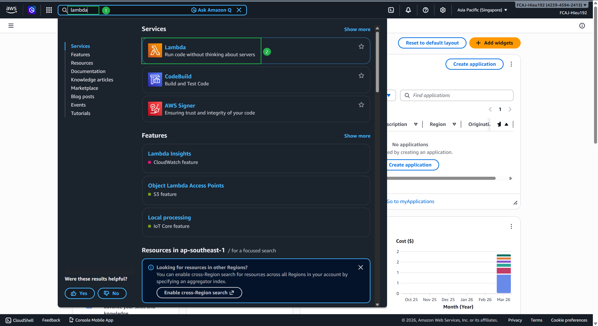
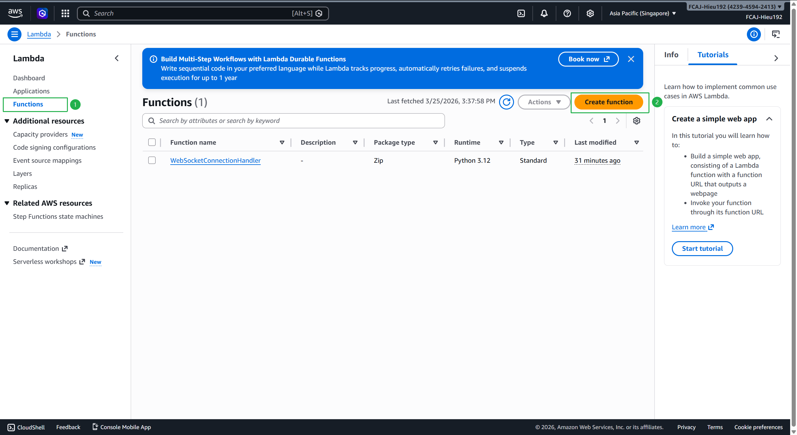
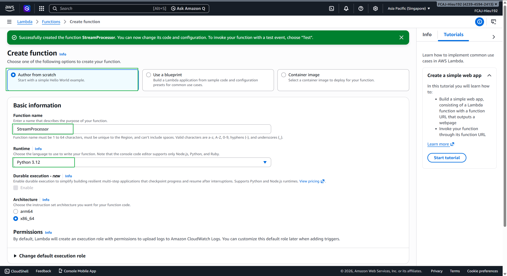
infra/modules/simple_websocket.py (This code receives events from DynamoDB Streams, then loops through simple-websocket-connections and calls API Gateway’s post_to_connection command).import json
import boto3
import logging
import os
from botocore.exceptions import ClientError
logger = logging.getLogger()
logger.setLevel(logging.INFO)
def lambda_handler(event, context):
dynamodb = boto3.resource('dynamodb')
connections_table = dynamodb.Table('simple-websocket-connections')
api_id = os.environ['API_ID'].strip()
region = os.environ['AWS_REGION']
endpoint_url = f"https://{api_id}.execute-api.{region}.amazonaws.com/prod"
apigateway = boto3.client('apigatewaymanagementapi', endpoint_url=endpoint_url)
# 1. Get connection list
try:
response = connections_table.scan()
connections = response.get('Items', [])
logger.info(f"Found {len(connections)} online connections")
except Exception as e:
logger.error(f"Error when SCANNING table: {str(e)}")
return
# 2. Process each data record change
for record in event['Records']:
event_name = record['eventName']
# CONVERT DATA TO CLEAN JSON (Very important for React)
raw_data = record['dynamodb'].get('NewImage', record['dynamodb'].get('OldImage'))
clean_data = convert_dynamodb_to_json(raw_data)
change_data = {
'eventName': event_name,
'data': clean_data
}
# 3. Send message
for conn in connections:
conn_id = conn['connectionId']
try:
apigateway.post_to_connection(ConnectionId=conn_id, Data=json.dumps(change_data))
logger.info(f"Successfully sent {event_name} to {conn_id}")
except Exception as e:
logger.error(f"Error when sending to {conn_id}: {str(e)}")
logger.info("--- END OF PROCESSING ---")
def convert_dynamodb_to_json(dynamodb_item):
"""This function helps to clean {S}, {N} characters so React won't crash"""
def convert_value(value):
if 'S' in value: return value['S']
elif 'N' in value: return float(value['N']) if '.' in value['N'] else int(value['N'])
elif 'BOOL' in value: return value['BOOL']
elif 'NULL' in value: return None
elif 'L' in value: return [convert_value(v) for v in value['L']]
elif 'M' in value: return {k: convert_value(v) for k, v in value['M'].items()}
return value
return {k: convert_value(v) for k, v in dynamodb_item.items()}
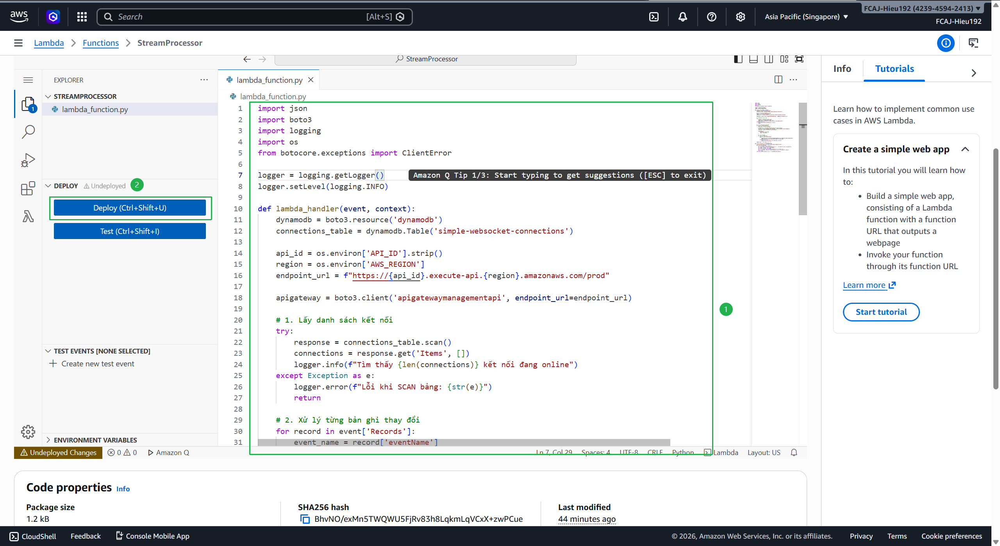
Grant Permissions: This Lambda needs execute-api:ManageConnections, dynamodb:GetRecords, dynamodb:GetShardIterator, dynamodb:DescribeStream, and dynamodb:ListStreams permissions to send messages through API Gateway and read DynamoDB Streams.
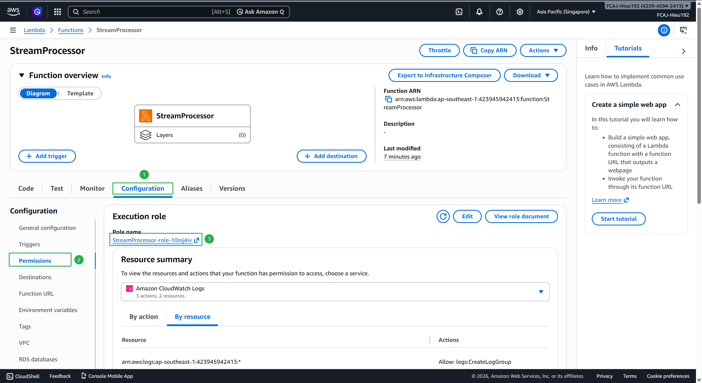
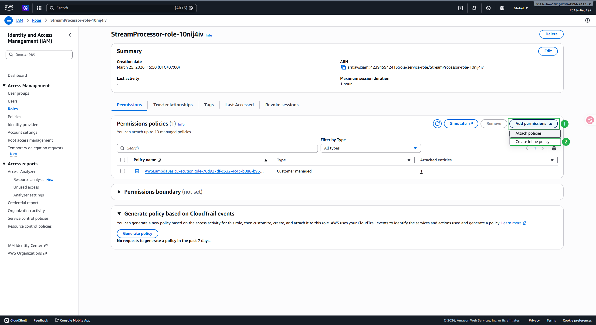
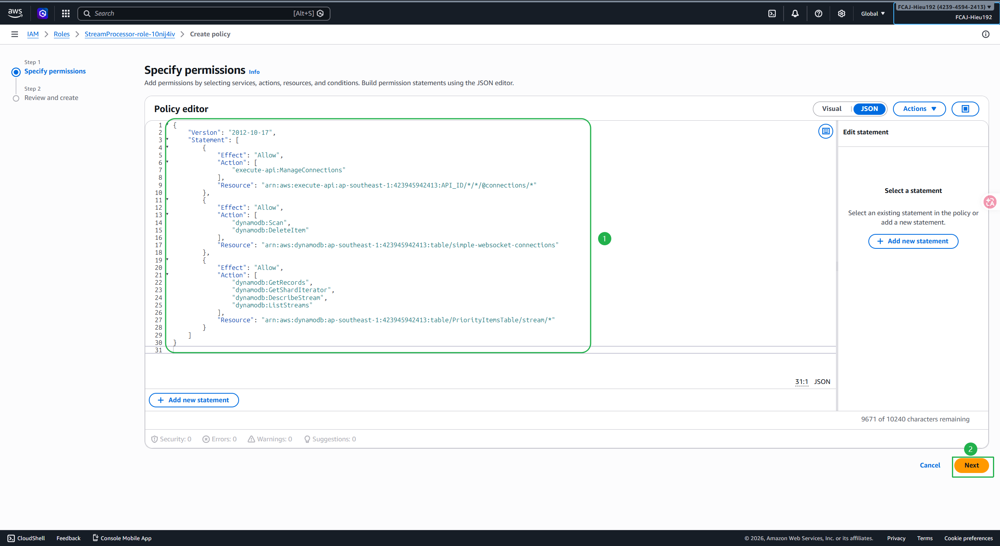
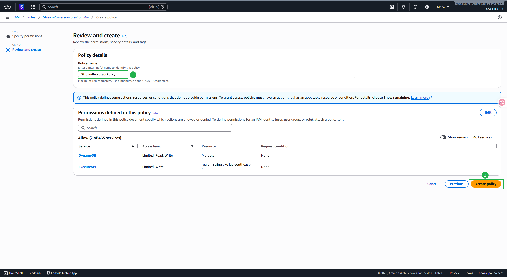
StreamProcessorPolicy permission:{
"Version": "2012-10-17",
"Statement": [
{
"Effect": "Allow",
"Action": "execute-api:ManageConnections",
"Resource": "arn:aws:execute-api:ap-southeast-1:423945942413:kvtige2lb3/prod/POST/@connections/*"
}
]
}
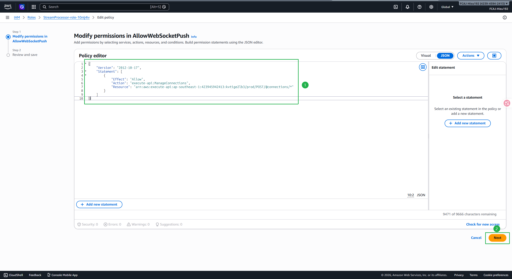
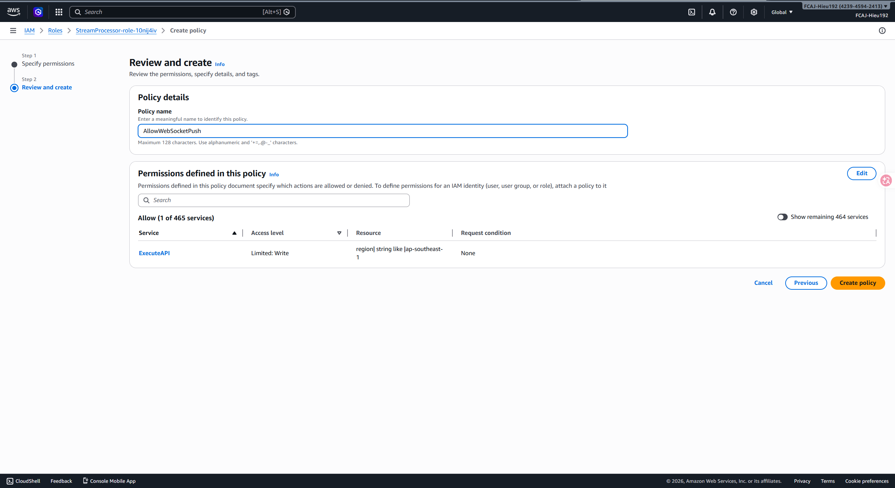
PriorityItemsTable (the table created in Section 1).
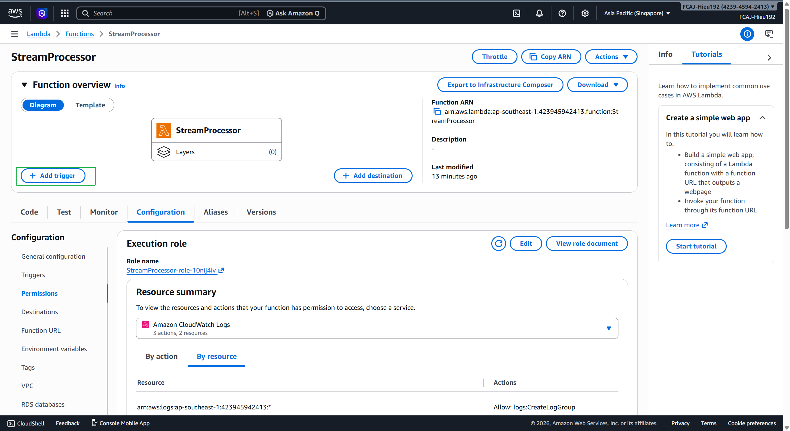
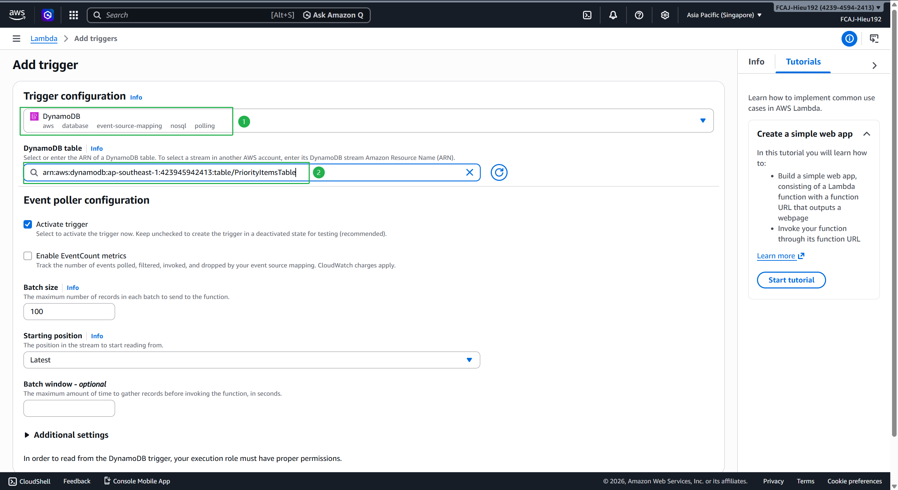
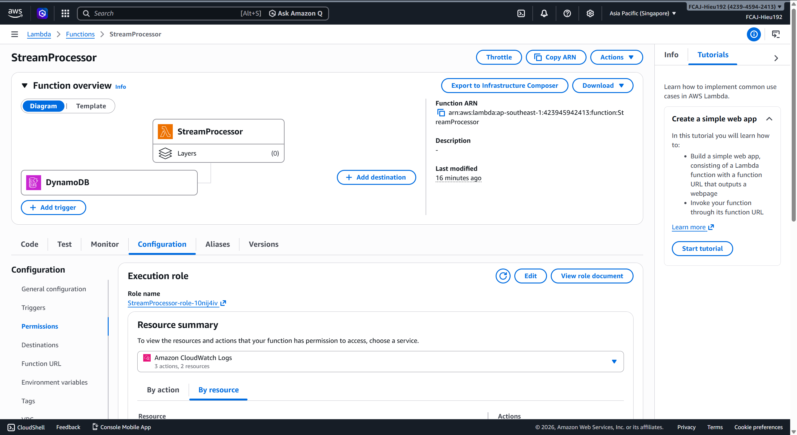